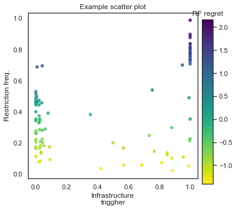

Scatter plots and colorbars using Matplotlib#
When representing high-dimensional data, color variation and/or gradation is a useful tool to help better visualize how different variables relate to one another. This is a demonstration on how to create a two-dimensional scatter plot where the color of each point represents a third variable. We will learn how to create, position, and show a colorbar that reflects the color gradient of the points.
First, let’s load all required librairies.
# import libraries
import numpy as np
import pandas as pd
import matplotlib.pyplot as plt
import matplotlib as mpl
import seaborn as sns
# set the figure background format
sns.set_theme(style="white")
Nice work! Now, let’s use the pd.read_csv() function to read in our dataset, scatter_colorbar.csv. This dataset contains three variables:
A water utility’s water-use restriction frequency (
RF)Its infrastructure trigger (
inf_trigger, or how often it is constructing new infrastructure). More information on these triggers can be found here.The restriction frequency’s regret measure (
RF_regret, more on that here).
# import data
df_scatter = pd.read_csv("scatter_colorbar.csv", index_col=0)
# extract the data to plot
RF = df_scatter['RF']
inf_trigger = df_scatter['inf_trigger']
RF_regret = df_scatter['RF_regret']
Before we plot any colors, its generally good practice to normalize the values of the variable we would like to plot as the color. Let’s make a function that will automate this for us:
def normalize_regret(regret_df):
regret_norm = (regret_df-regret_df.mean())/regret_df.std()
return regret_norm
We will plot RF against inf_trigger, and use normalized RF_regret to color the points. Let’s begin!
# Make the figure and subplot
# set the figure size
fig, ax = plt.subplots(1, 1, figsize=(5, 5))
# plot the data using the reversed viridis colormap
ax.scatter(inf_trigger, RF, c=normalize_regret(RF_regret), cmap='viridis_r', s=20, alpha=0.8)
ax.set_xlabel("Infrastructure\ntrigger")
ax.set_ylabel("Restriction freq.")
ax.set_title("Example scatter plot")
# Create the color bar
# the darker the color, the higher the regret
norm = plt.Normalize(normalize_regret(RF_regret).min(), normalize_regret(RF_regret).max())
cax = fig.add_axes([0.94, 0.1, 0.05, 0.75]) # [left, bottom, width 5% of figure width, height 75% of figure height]
cax.set_title('RF regret')
cbar = fig.colorbar(mpl.cm.ScalarMappable(norm=norm, cmap='viridis_r'), cax=cax, orientation='vertical')
plt.show()
Whoa, what just went down here? Let’s walk through this.
First, we created a figure and its child subplot that will host our data points.
Next, we created the scatter plot and told it to color it using the
viridis_rcolormap, which is the reversed version of the basicviridiscolormap, which colors higher values a lighter color. In our case, we would like higher regret to be represented using darker colors. Thus, we append the_rsuffix to the colormap name. This will generally apply to all Matplotlib colormaps. You can find an exhaustive list of all named colormaps available in Matplotlib here.We then formatted the scatter plot with axis and plot labels.
Then, we created the color bar.
The
normvariable creates aplt.NormalizeMatplotlib object that takes a (min, max) range and converts it into a range of colors.The
caxis an additional axis that is placed at 92% of the width and 10% from the bottom of the figure. It has dimensions of 5% of the figure width, and 75% of the figure height.We named this colorbar ‘RF regret’.
And then we placed the colorbar into the figure at position
caxwith a vertical orientation. The first argument into thecolorbarfunction,mpl.cm.ScalarMappable(norm=norm, cmap='viridis_r')ensures that the color gradient in the colorbar is appropriate according to the values ofRF_regretand uses theviridis_rcolormap.
If the code ran successfully, you should be able to display and save the following figure:

Great work!